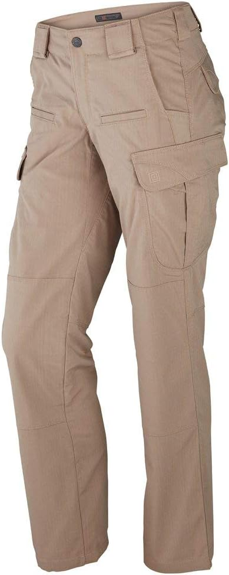
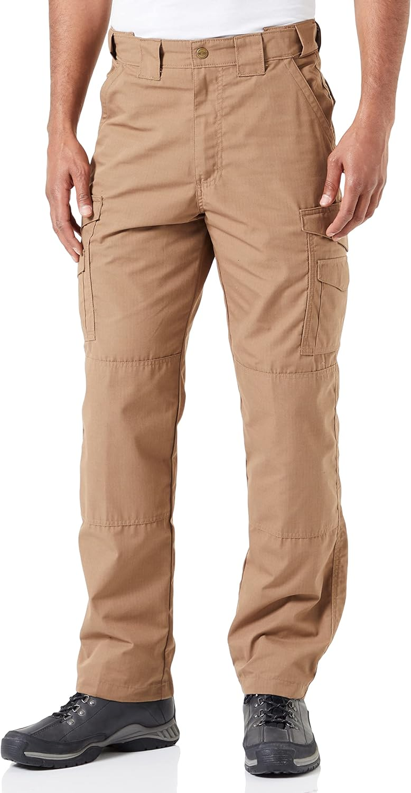
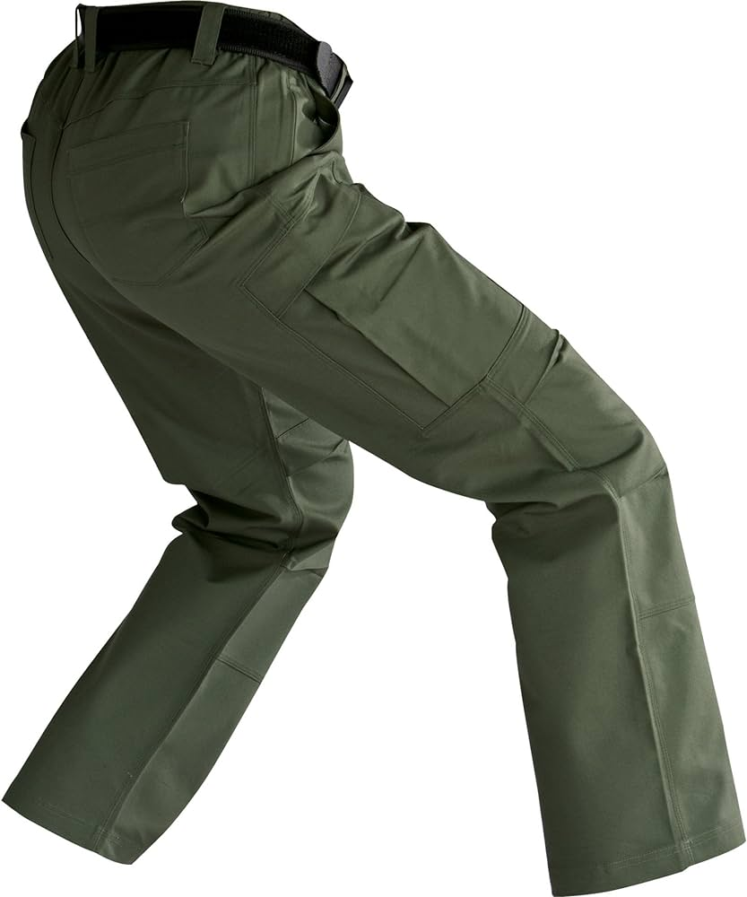
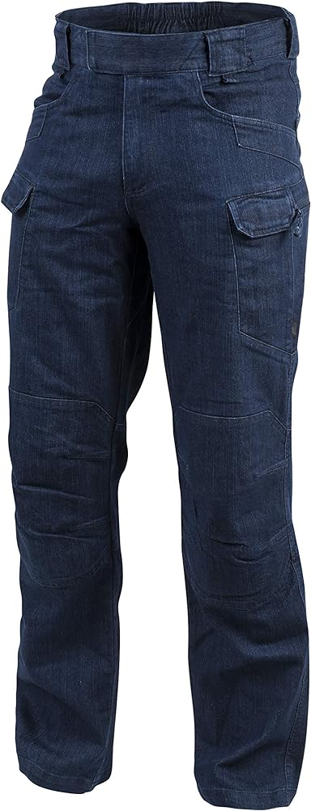
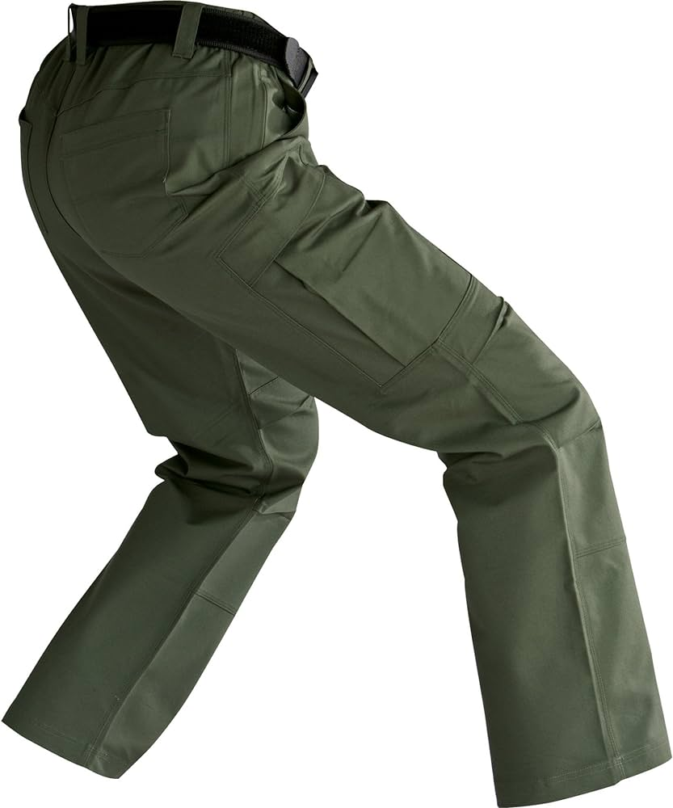
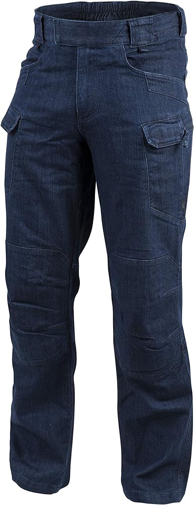
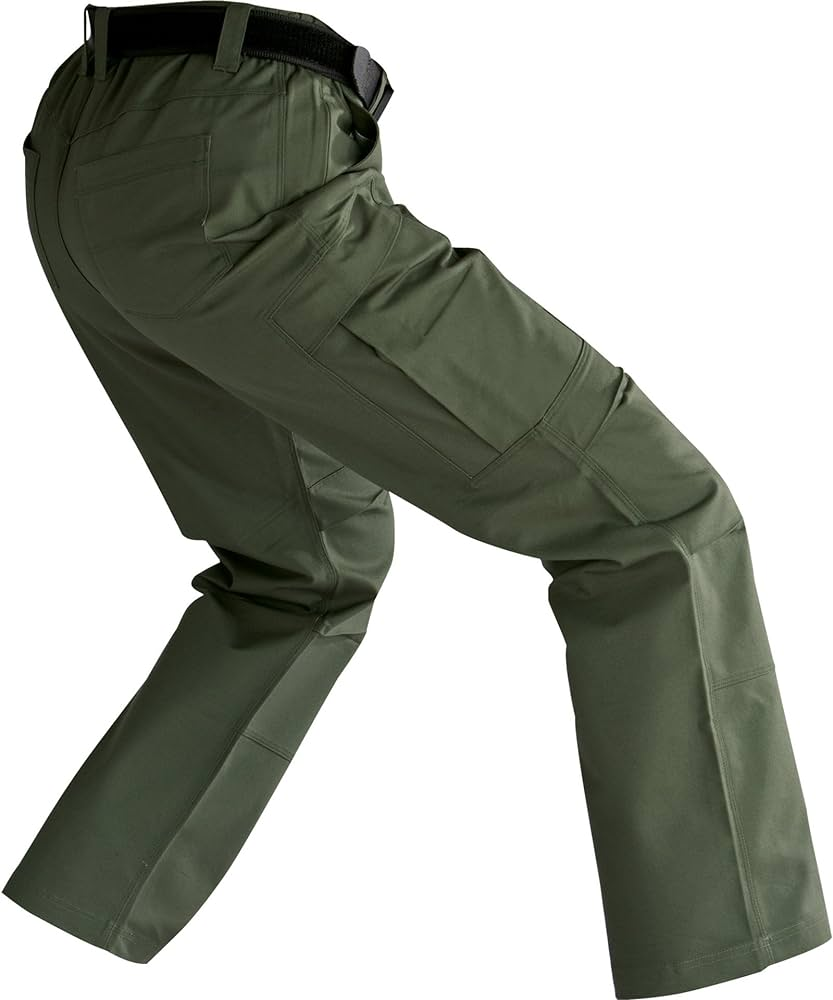
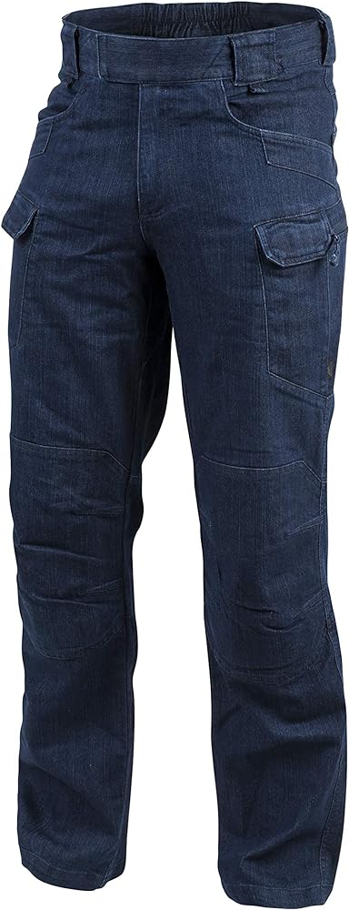

PANTALONES TACTICOS


 





Pantalones Tacticos
Los pantalones tacticos La cintura ajustable y las trabillas reforzadas permiten un ajuste personalizado y la posibilidad de utilizar un cinturón táctico para mayor comodidad y estabilidad. Además, la tela resistente al agua y a las manchas asegura que el pantalón se mantenga limpio y seco en condiciones adversas.